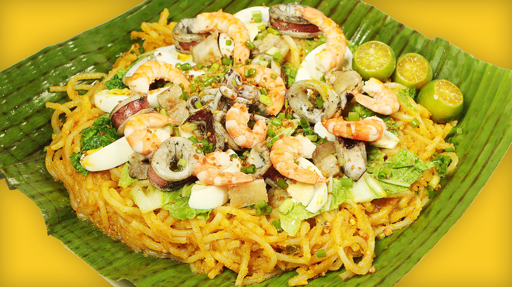

Pancit Malabon Recipe

Video Tutorial: Pancit Malabon Recipe Video
Pancit Malabon is a festive noodle dish loaded with seafood and vibrant flavors. Here's how to make it:
Ingredients:
- 1 lb. thick rice noodles (bihon)
- 1/2 lb. shrimp, peeled and deveined
- 1/2 lb. squid, cleaned and sliced into rings
- 1/2 lb. cooked crab meat, flaked
- 1/2 lb. pork belly, sliced into strips
- 1/2 cup annatto (achuete) oil
- 1 onion, chopped
- 4 cloves garlic, minced
- 4 cups shrimp stock (or chicken broth)
- 1 cup water
- 1 cup shrimp juice (from boiling the shrimp shells)
- 1/2 cup fish sauce (patis)
- 1/4 cup cornstarch, dissolved in 1/4 cup water
- Hard-boiled eggs, sliced
- Fresh calamansi or lemon wedges
- Chopped green onions, for garnish
- Crushed chicharon (pork cracklings), for topping
Instructions:
- Boil water in a large pot and cook the thick rice noodles according to package instructions. Drain and set aside.
- In a separate pot, boil the shrimp shells in water to extract shrimp juice. Set aside.
- Heat annatto oil in a large wok or skillet over medium heat. Sauté onions and garlic until soft and fragrant.
- Add pork belly and cook until lightly browned.
- Add shrimp and squid, and cook until they turn pink and opaque.
- Pour in shrimp stock, water, and shrimp juice. Bring to a simmer.
- Add fish sauce and adjust seasoning according to taste.
- Thicken the sauce by gradually adding the cornstarch mixture while stirring continuously.
- Add the cooked rice noodles and crab meat to the sauce. Toss until well combined and heated through.
- Transfer Pancit Malabon to a serving platter.
- Garnish with sliced hard-boiled eggs, chopped green onions, and crushed chicharon on top.
- Serve with calamansi or lemon wedges on the side.